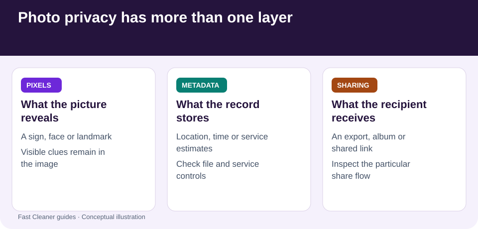

Does using Fast Cleaner automatically remove photo locations?
On-device analysis describes where processing happens; it does not establish that location metadata has been removed. Fast Cleaner’s local-processing claim should not be treated as a metadata-stripping feature. Check the file and the sharing method separately before sending a sensitive photo.
On-device AI does not, by itself, mean a photo’s location metadata has been removed. It describes where a feature performs its work. Removing location information is a separate operation that needs to be supported and verified.
You can keep a photo off a processing server and still share an exported image containing information you did not intend to send. That is why a useful privacy check follows the output file, not just the app’s headline claim.
- Processing location and retained file information are separate questions.
- Inspect the exported or shared copy, not just the library view.
- Removing a location tag does not hide visible clues in the image.
Separate the three privacy decisions
Access: which media can the app inspect? Processing: does the feature run on your device or use a service? Output: what information is included in the copy you save or share?
Those decisions can have different answers. A local cleanup feature might help identify similar photos without changing their metadata at all. A sharing control might omit a location from an export without deciding which library items are worth keeping.
| Claim | Question still to ask |
|---|---|
| On-device processing | What information remains in the output? |
| Location removed | Which copy changed, and what other metadata remains? |
| Selected-photo access | How are those selected files processed or shared? |
Inspect location information before sharing
Apple’s location-metadata guide explains how to inspect a photo’s information, remove its location, and turn off Location in sharing options. Use the instructions appropriate to your device.
On iPhone, start by opening a photo and viewing its information panel. For sharing through Photos, inspect Options and its Location control before sending. Menu wording and available options can vary.
Use a harmless sample to learn the process before working with a sensitive image. Knowing where the relevant control appears is more useful than assuming every share destination behaves the same way.
Understand the limits of account-level location edits
Google Photos distinguishes camera-supplied locations from estimated or manually added locations. Its location-editing controls do not imply that every embedded camera location can be removed there.
A map disappearing in an account interface is therefore not sufficient evidence about an exported file. Work out whether you edited an account detail, changed a library item, or created a new copy.
If you want to stop future camera geotagging, review the camera’s own location settings. Google lists manufacturer-specific camera controls. That future setting is separate from cleaning up files already captured.
Verify the copy that will reach someone else
Create a test export using the same route you intend to use for sharing. Open that output in a tool that exposes file metadata and check whether location information remains. Record which file you inspected so you do not accidentally examine the original instead.
If the file is converted again by a messaging app or another service, the result can differ from a direct file transfer. Test the route that matters to you rather than assuming one check covers every destination.
Also inspect what is visible: a street sign, school uniform, address on a parcel, or view from a window may reveal information without any embedded coordinates. Metadata removal cannot erase those clues.
Use a cleaner for its documented job
Fast Cleaner helps review duplicate and similar photos, screenshots, and video storage. Our description of on-device cleanup is not a claim that every photo has its location metadata stripped.
If metadata removal is your objective, choose a tool or platform control that explicitly supports it, check the output, and preserve any original you want for your own records. Review the tool’s access and upload practices as well.
This distinction lets you combine useful controls: keep processing local where appropriate, restrict unnecessary access, and inspect the shared file. No single label should stand in for all three decisions.
You can also download  Fast Cleaner: AI Photo Clean. Review the features available on your platform and any pricing before choosing an app.
Fast Cleaner: AI Photo Clean. Review the features available on your platform and any pricing before choosing an app.
Your review checklist
Mark each point after you have considered it. This worksheet records your review; it does not inspect your device.
You have reviewed each point. Proceed only with the changes you understand and want to make.
Your selections stay in this page’s memory, are not submitted, and reset when you reload.
Common questions
Does AI automatically remove GPS information?
No. AI describes a technique or feature, not a guarantee about output metadata. Look for an explicit location-removal operation and verify the result.
Does removing GPS make a photo anonymous?
No. Other metadata and visible details may still reveal information. Inspect both the file information and the image itself.
Does disabling camera location change older photos?
Treat it as a capture setting for future images. Review existing files separately rather than assuming they have been rewritten.
Three separate places location information can appear
| Layer | Example | What to inspect |
|---|---|---|
| Visible image | Street sign or recognizable landmark. | The picture itself, even after metadata removal. |
| File or service metadata | Camera GPS, manually added or estimated location. | The file information and photo-service controls. |
| Sharing method | A shared album, link or exported file. | The information included by that particular sharing flow. |
Google’s wording:
estimates your location.
Google documents location estimates based on landmarks and other photos. Removing one metadata field does not remove visual clues or every service-level location record.
Platform source: Google — Understand, find and edit photo locations, checked November 21, 2026.

Where Fast Cleaner fits
Use Fast Cleaner for media review, and use the relevant photo or sharing controls for location privacy. Do not describe Fast Cleaner as removing GPS information unless that feature is verified in the current build.
Fast Cleaner’s privacy policy describes on-device media analysis with separate limited analytics. Compare Android and iPhone pricing.
Continue with Ai privacy on device photo cleaner.
Official platform references are linked beside the relevant claims. Menu labels and available features vary by software version and device. Examples are illustrative; this guide does not claim a measured cleanup result or an endorsement by Apple or Google.